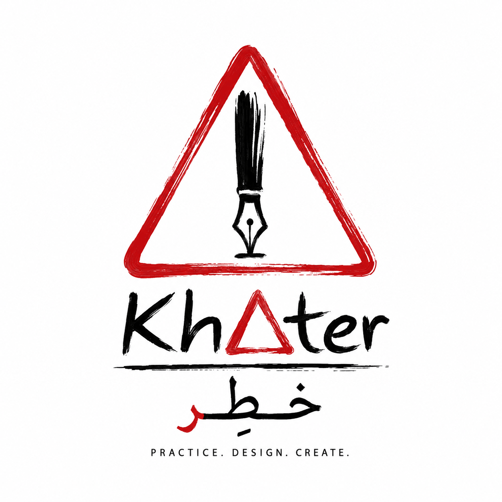
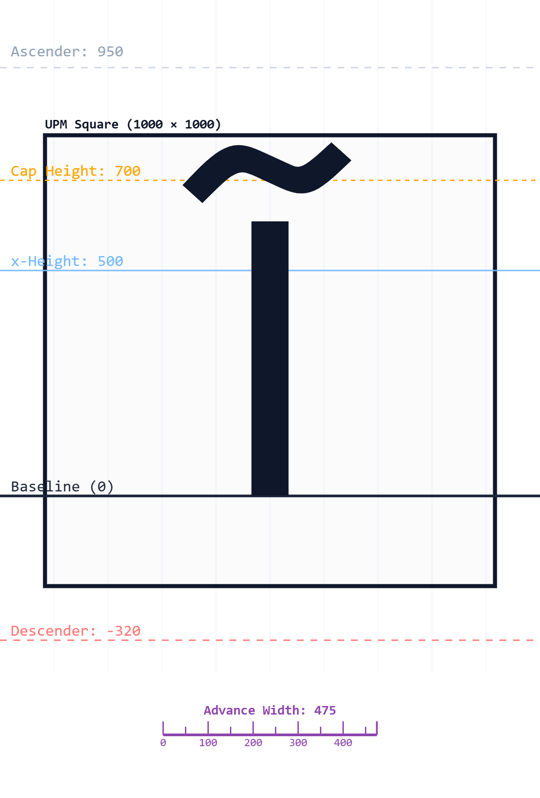
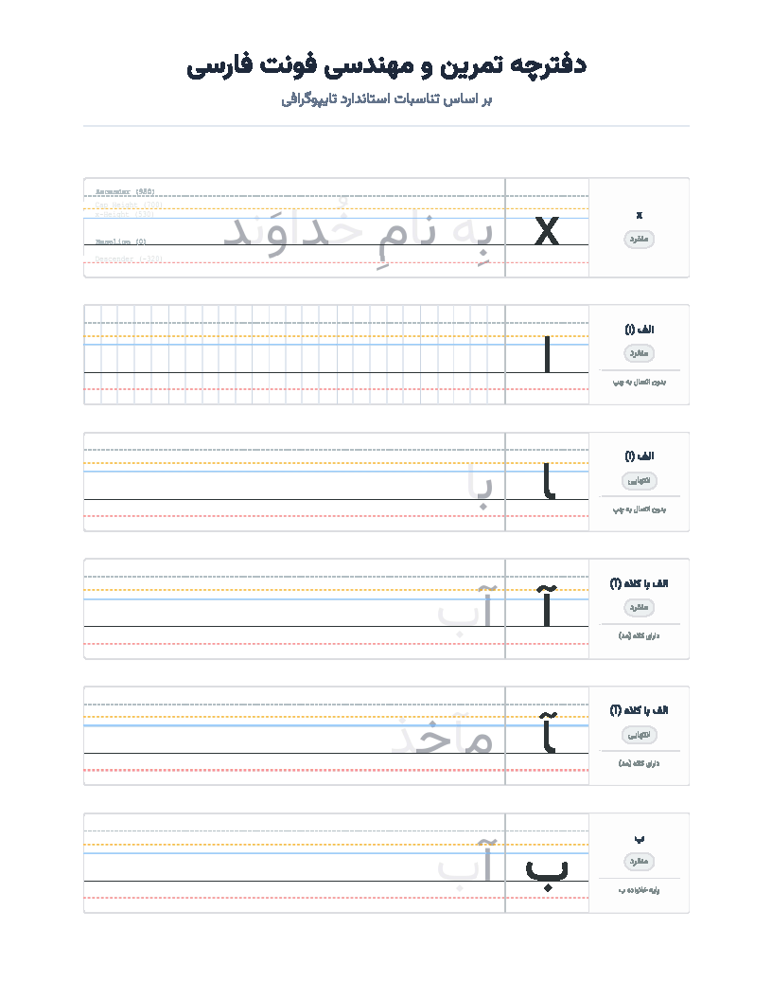

خطِر (KhAter) یک ابزار جامع برای طراحان تایپ است. متریکهای فونت را با دقت ریاضی تنظیم کنید، فواصل (Kerning) را زنده بررسی کنید و برای طراحی اسکلت حروف، خروجیهای استاندارد SVG و PDF بگیرید.

تمام آنچه برای مهندسی پایهای، بررسی اتصالات، و رسم راهنمای طراحی حروف (گلیفها) نیاز دارید در یک پلتفرم تحت وب جمعآوری شده است.
مقادیر UPM، Ascender، Cap Height، x-Height و Descender را به صورت دقیق وارد کنید یا اجازه دهید سیستم به صورت خودکار از فایل فونت شما استخراج کند.
با استفاده از موتور قدرتمند OpenType.js، مقادیر دقیق فضای اشغالی هر حرف و فواصل تعبیه شده (Kerning) بین کلمات را به صورت بصری و عددی مشاهده کنید.
تولید فایلهای SVG و PNG با رزولوشن منطبق بر UPM برای طراحی دقیق گلیفها، و همچنین تولید فایل PDF چند صفحهای مناسب برای چاپ و تمرین دستی.
لیست کاراکترها، دستهبندیها، نمونه متون و فرمهای مختلف حروف را از طریق فایل Excel وارد برنامه کنید و پس از تغییر، مجدداً خروجی اکسل بگیرید.
برای درک بهتر مرز بین حروف متصل، برنامه به صورت خودکار حروف زوج و فرد را در نمونهمتنهای تمرینی با رنگها و شفافیت متفاوت رندر میکند.
نیاز به نصب هیچ نرمافزاری ندارید. تمام پردازشها (حتی رندر فونتهای کاستوم و خواندن اکسل) درون مرورگر شما و با امنیت کامل انجام میشود.
مرحله طراحی حروف نیازمند درک صحیحی از تناسبات (Proportions) است. «خطِر» به شما این امکان را میدهد که با وارد کردن فونتهای الگو یا در حال طراحی خود، راهنماهای طراحی (Guidelines) را دقیقاً بر اساس مشخصات فایل استخراج کنید.


بر اساس تناسبات استاندارد تایپوگرافی
خروجیهای «خطِر» تنها به محیط دیجیتال محدود نمیشوند. با یک کلیک میتوانید تمام کاراکترها و نمونه متون خود را در قالب صفحات استاندارد، همراه با خطکشیهای دقیق و تفکیک رنگی استخراج کنید که برای پرینت و تمرین دستی کالیگرافی ایدهآل است.
خطوط راهنمای Ascender تا Descender با ضخامتها و رنگهای متفاوت (نقطهچین و خطچین) دقیقاً بر اساس متریکهای استخراجشده از فونت شما رسم میشوند.
نمایش اطلاعات تخصصی هر گلیف اعم از نام، یونیکد، حالت (منفرد، انتهایی، و...) و استایلهای متصل در قالب جدولبندی استاندارد.